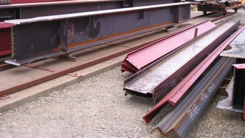
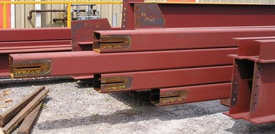

Hot-rolled steel members [SR]
Steel sections that have been hot rolled or fabricated from plates welded together and used as primary lateral load-resisting structure, welded or bolted together.

Hot-rolled steel sections at a construction site: I-shaped (called W sections in North America), channel sections (called C sections in North America, etc. (Canada - S. Brzev)

Hot-rolled hollow steel sections (HSS sections), Canada (S. Brzev)

Steel building construction, hot-rolled steel members, Wellington, New Zealand (A. Charleson)

Steel building under construction, hot-rolled steel members, California (S. Brzev)